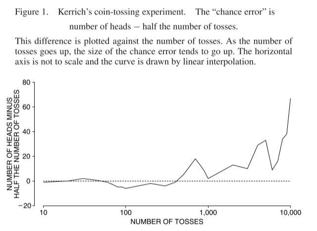
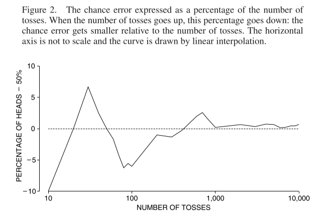

Chapter 16 The Law of Averages
16.1 Chapter Notes
The chapter opens with a description of the experiments in probability conducted by mathematician John Kerrich while he has interned in a camp in Nazi-occupied Denmark during World War Two. In one of his experiments, Kerrich and another internee tossed a coin 10,000 times. Here’s a graph of the results, where the y-axis is the number of heads less the expected number of heads (i.e. half the number of tosses):

We can see that as the number of coin tosses increases, the absolute size of the error also increases. Here’s a second graph, this time showing the percentage of tosses that came up heads less the expected percentage of heads (i.e. 50%):

The Law of Averages is described informally in the chapter as follows:
The number of heads will be around half the number of tosses, but it will be off by some amount — chance error. As the number of tosses goes up, the chance error gets bigger in absolute terms. Compared to the number of tosses, it gets smaller.
The chapter then introduces the box model: simple probability thought experiments where numbers (say, 1 to 6) are written on tickets in a box. Then a certain number of draws are made from the box with replacement and the numbers on the ticket are summed. The idea behind the use of a box model is that chance processes we might care about in real life, like roulette or survey sampling can be reasoned about by analogy to the box model.
We need to ask three questions when constructing a box model:
- What numbers go into the box?
- How many of each kind?
- How many draws?
For example, a spin on a roulette wheel where you bet $1 on either red or black can be thought of as a draw from a box where some of the tickets show +$1 and some of the tickets show -$1. For an American roulette wheel that has both 0 and 00, there are 18 +$1 tickets and 20 -$1 tickets. Using the box model strips away all extraneous detail.
If you bet on a single number and win you get your dollar back plus 35 dollars in winnings. Betting a dollar on a single number is like drawing a ticket from a box where one ticket has +$35 written on it and 37 tickets have -$1 written on them.